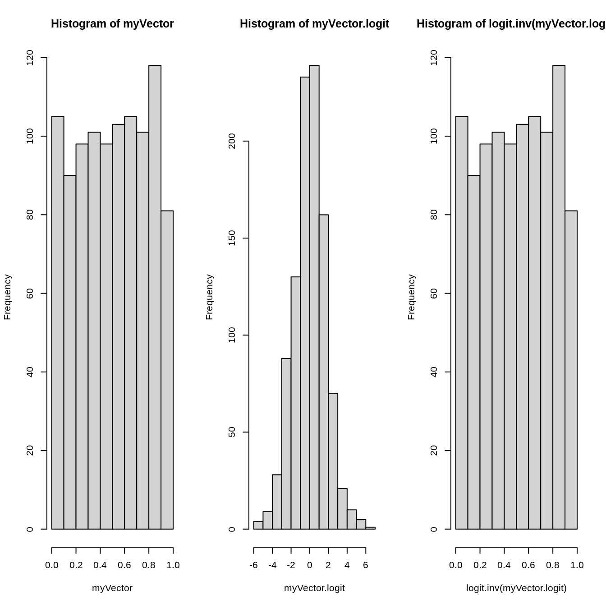
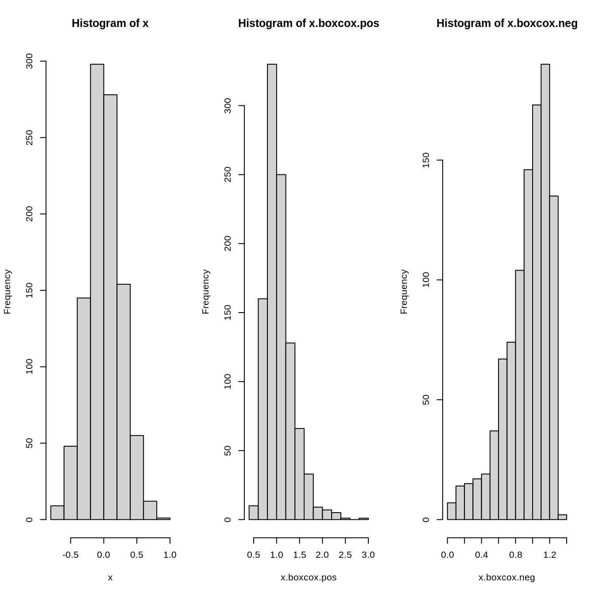
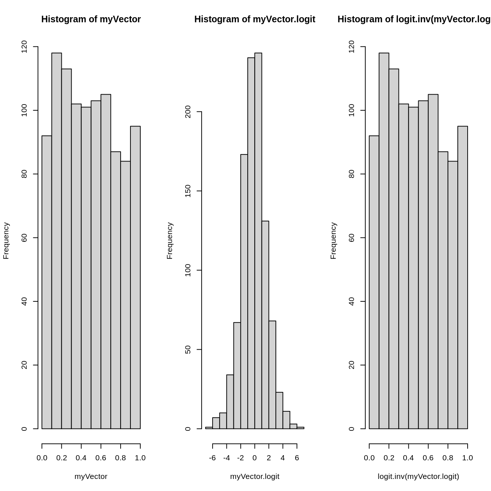
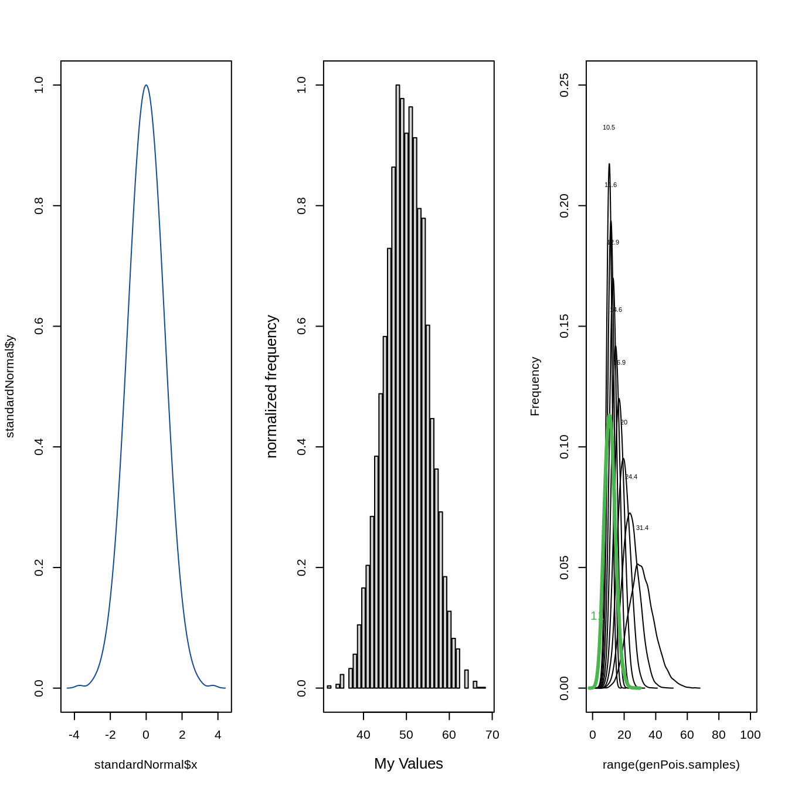
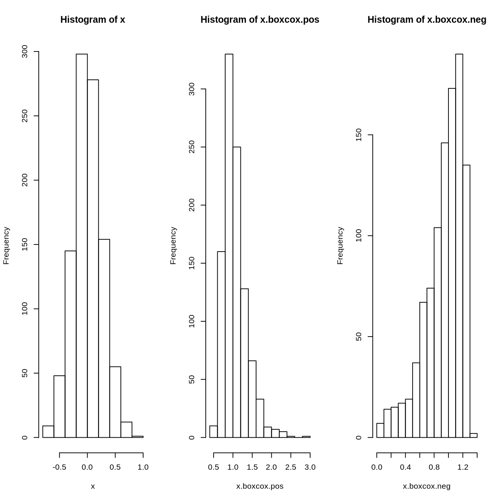
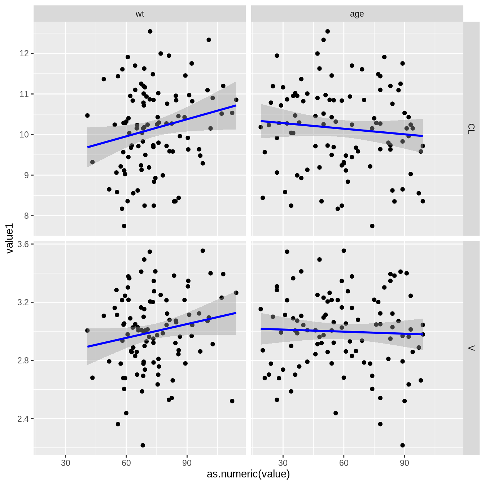

qpToolkit General Purpose Functions
Klaas Prins
2020-01-17
qpToolkitGeneralPurposeFunctions.RmdKick off by creating some play data with PK and PD data.
##
## extrc.> extract.number("c76")
## [1] 76
##
## extrc.> extract.number("c76c7")
## [1] 76
##
## extrc.> extract.number("BLOQ = 0.144")
## [1] 0.144##
## extrc.> extract.character(x = "df12Lee31df")
## [1] "df" "Lee" "df"
##
## extrc.> extract.character(x = "df1231df", TRUE)
## [1] "dfdf"##
## cut3> pkpdData = example.pkpdData()
##
## cut3> sunique(cut3(pkpdData$wt, g = 10, levels.mean = TRUE))
## [1] 57.867 67.250 71.389 73.429 76.077 78.471 80.455 82.100 86.462 94.917
##
## cut3> lunique(cut3(pkpdData$wt, g = 10, levels.mean = TRUE))
## [1] 10##
## geomen> set.seed(1234)
##
## geomen> x = rlnorm(1000)
##
## geomen> mean(x)
## [1] 1.606631
##
## geomen> geomean(x)
## [1] 0.9737534##
## expnd.> input.df = data.frame(A = 1:2,B = 2:3,C = 4:5)
##
## expnd.> input.df
## A B C
## 1 1 2 4
## 2 2 3 5
##
## expnd.> expand.data(input.df, values = c(1,3,7), "Klaas")
## A B C Klaas
## 1 1 2 4 1
## 2 2 3 5 1
## 1.1 1 2 4 3
## 2.1 2 3 5 3
## 1.2 1 2 4 7
## 2.2 2 3 5 7## Warning in example("geomean.smedian.hilow"): no help found for
## 'geomean.smedian.hilow'##
## frmtt.> library(xtable)
##
## frmtt.> formatted.signif(c(5,4.99, 4.99999,5.0000001,5001),4)
## [1] "5.000" "4.990" "5.000" "5.000" "5001"
##
## frmtt.> numvec = c(5,4.99, 4.99999,5.0000001,5001, 0.00005,101,39.9)
##
## frmtt.> print(
## frmtt.+ xtable(
## frmtt.+ data.frame(original = numvec
## frmtt.+ ,latex.TRUE = formatted.signif(numvec,3, TRUE,FALSE)
## frmtt.+ ,align.TRUE = formatted.signif(numvec,3, FALSE,TRUE)
## frmtt.+ ,all.TRUE = formatted.signif(numvec,3, TRUE,TRUE)
## frmtt.+ )
## frmtt.+ )
## frmtt.+ , booktabs = TRUE
## frmtt.+ , sanitize.text.function = identity
## frmtt.+ )
## % latex table generated in R 3.6.2 by xtable 1.8-4 package
## % Fri Jan 17 23:30:00 2020
## \begin{table}[ht]
## \centering
## \begin{tabular}{rrlll}
## \toprule
## & original & latex.TRUE & align.TRUE & all.TRUE \\
## \midrule
## 1 & 5.00 & 5.00 & $\phantom{00}$5.00 & $\phantom{00}$5.00 \\
## 2 & 4.99 & 4.99 & $\phantom{00}$4.99 & $\phantom{00}$4.99 \\
## 3 & 5.00 & 5.00 & $\phantom{00}$5.00 & $\phantom{00}$5.00 \\
## 4 & 5.00 & 5.00 & $\phantom{00}$5.00 & $\phantom{00}$5.00 \\
## 5 & 5001.00 & 5.00$\cdot$10$^{3}$ & $\phantom{00}$5.00e+03 & $\phantom{00}$5.00$\cdot$10$^{3}$ \\
## 6 & 0.00 & 5.00$\cdot$10$^{-5}$ & $\phantom{00}$5.00e-05 & $\phantom{00}$5.00$\cdot$10$^{-5}$ \\
## 7 & 101.00 & 101 & $\phantom{}$101 & $\phantom{}$101 \\
## 8 & 39.90 & 39.9 & $\phantom{0}$39.9 & $\phantom{0}$39.9 \\
## \bottomrule
## \end{tabular}
## \end{table}
##
## frmtt.> # now take this to a LaTeX compiler!
## frmtt.>
## frmtt.>
## frmtt.>##
## fxs> fxs(c(0,1,34, 50000), pattern = " ")
## [1] " 0" " 1" " 34" "50000"
##
## fxs> fxs(c(0,1,34, 50000), "000000")
## [1] "000000" "000001" "000034" "050000"##
## insrt.> pkpdData = example.pkpdData()
##
## insrt.> tmp = pkpdData[1:3,]
##
## insrt.> tmp
## id dose age wt ht bmi sex race endpoint trt time type cl
## 1 1 0 38 69 188 19.5 F Caucasian effect Placebo 0 PK 2.982152
## 1.1 1 0 38 69 188 19.5 F Caucasian effect Placebo 1 PK 2.982152
## 1.2 1 0 38 69 188 19.5 F Caucasian effect Placebo 2 PK 2.982152
## v keo value
## 1 15.48754 0.123656 0.05
## 1.1 15.48754 0.123656 0.05
## 1.2 15.48754 0.123656 0.05
##
## insrt.> insert.blank.line(tmp, 2)
## id dose age wt ht bmi sex race endpoint trt time type
## 1 1 0 38 69 188 19.5 F Caucasian effect Placebo 0 PK
## 1.1 1 0 38 69 188 19.5 F Caucasian effect Placebo 1 PK
## 11 ~ ~ ~ ~ ~ ~ ~ ~ ~ ~ ~ ~
## 1.2 1 0 38 69 188 19.5 F Caucasian effect Placebo 2 PK
## cl v keo value
## 1 2.98215172054315 15.4875352764428 0.12365598192393 0.05
## 1.1 2.98215172054315 15.4875352764428 0.12365598192393 0.05
## 11 ~ ~ ~ ~
## 1.2 2.98215172054315 15.4875352764428 0.12365598192393 0.05##
## isNmrc> isNumeric(12)
## [1] TRUE
##
## isNmrc> isNumeric("x")
## [1] FALSE
##
## isNmrc> isNumeric(c(1,2,3,"b",5,6))
## [1] TRUE TRUE TRUE FALSE TRUE TRUE##
## asNmrc> as.numeric(c("3.45","1000","1e6","<BLOQ","NA","<0.100"))## Warning in eval(ei, envir): NAs introduced by coercion## [1] 3.45e+00 1.00e+03 1.00e+06 NA NA NA
##
## asNmrc> asNumeric(c("3.45","1000","1e6","<BLOQ","NA","<0.100"))## Warning in asNumeric(c("3.45", "1000", "1e6", "<BLOQ", "NA", "<0.100")): NAs
## introduced by coercion## [1] 3.45e+00 1.00e+03 1.00e+06 NA NA NA
##
## asNmrc> asNumeric(c("3.45","1000","1e6","<BLOQ","NA","<0.100"), missing.code = c("<BLOQ","NA","<0.100"))
## [1] 3.45e+00 1.00e+03 1.00e+06 NA NA NA##
## locf> locf(c(NA,NA,1,NA,NA,2,NA,NA,NA,NA,3))
## [1] 1 1 1 1 1 2 2 2 2 2 3
##
## locf> # Note that initial missing values take next value (1),
## locf> # so next value carried backward at beginning
## locf> # Example with "."
## locf> locf(c(".",".",1,".",".",2,".",".",".",".",3), na = ".")
## [1] "1" "1" "1" "1" "1" "2" "2" "2" "2" "2" "3"
##
## locf> # Note, if you have text in the vector, it is all converted to text.
## locf> # This is by design so we can use different types.
## locf> # Examples with factors
## locf> fac = as.factor(c(".",".","A",".",".","B",".",".",".",".","C"))
##
## locf> locf(fac,na = ".")
## [1] A A A A A B B B B B C
## Levels: A B C
##
## locf> fac = as.factor(c(NA,NA,"A",NA,NA,"B",NA,NA,NA,NA,"C"))
##
## locf> locf(fac,na = NA)
## [1] A A A A A B B B B B C
## Levels: A B C##
## mss.cl> my.df.1 = data.frame(a = 1:3,b = 4:6,c = 7:9)
##
## mss.cl> my.df.2 = data.frame(a = 1:3,b = 4:6)
##
## mss.cl> miss.col(my.df.1,my.df.2)
## [1] "c"
##
## mss.cl> #"c"
## mss.cl> miss.col(my.df.2,my.df.1)
## character(0)
##
## mss.cl> #character(0)
## mss.cl>
## mss.cl>
## mss.cl>##
## ordrdN> out = expand.grid(ID = 1:5, DOSE = c(0,500,100,4000))
##
## ordrdN> factor(out$DOSE)
## [1] 0 0 0 0 0 500 500 500 500 500 100 100 100 100 100
## [16] 4000 4000 4000 4000 4000
## Levels: 0 100 500 4000
##
## ordrdN> #Levels: 0 100 500 4000 ## W H A T ???
## ordrdN> orderedNumeric(out$DOSE)
## [1] 0 0 0 0 0 500 500 500 500 500
## [11] 100 100 100 100 100 4000 4000 4000 4000 4000
## Levels: 0 100 500 4000
##
## ordrdN> #Levels: 0 100 500 4000 #that's better, similar to ordered(out$DOSE)
## ordrdN> orderedNumeric(out$DOSE, special.x = list(0, "Placebo"))
## [1] Placebo Placebo Placebo Placebo Placebo 500 500 500 500
## [10] 500 100 100 100 100 100 4000 4000 4000
## [19] 4000 4000
## Levels: Placebo 100 500 4000
##
## ordrdN> #Levels: Placebo 100 500 4000
## ordrdN> orderedNumeric(out$DOSE, prefix = "DrugName ")
## [1] DrugName 0 DrugName 0 DrugName 0 DrugName 0
## [5] DrugName 0 DrugName 500 DrugName 500 DrugName 500
## [9] DrugName 500 DrugName 500 DrugName 100 DrugName 100
## [13] DrugName 100 DrugName 100 DrugName 100 DrugName 4000
## [17] DrugName 4000 DrugName 4000 DrugName 4000 DrugName 4000
## Levels: DrugName 0 DrugName 100 DrugName 500 DrugName 4000
##
## ordrdN> orderedNumeric(out$DOSE, prefix = "DrugName", suffix = "mcg")
## [1] DrugName 0 mcg DrugName 0 mcg DrugName 0 mcg DrugName 0 mcg
## [5] DrugName 0 mcg DrugName 500 mcg DrugName 500 mcg DrugName 500 mcg
## [9] DrugName 500 mcg DrugName 500 mcg DrugName 100 mcg DrugName 100 mcg
## [13] DrugName 100 mcg DrugName 100 mcg DrugName 100 mcg DrugName 4000 mcg
## [17] DrugName 4000 mcg DrugName 4000 mcg DrugName 4000 mcg DrugName 4000 mcg
## 4 Levels: DrugName 0 mcg DrugName 100 mcg ... DrugName 4000 mcg
##
## ordrdN> orderedNumeric(out$DOSE, prefix = "DrugName", suffix = "mcg", special.x = list(0, "Placebo"))
## [1] Placebo Placebo Placebo Placebo
## [5] Placebo DrugName 500 mcg DrugName 500 mcg DrugName 500 mcg
## [9] DrugName 500 mcg DrugName 500 mcg DrugName 100 mcg DrugName 100 mcg
## [13] DrugName 100 mcg DrugName 100 mcg DrugName 100 mcg DrugName 4000 mcg
## [17] DrugName 4000 mcg DrugName 4000 mcg DrugName 4000 mcg DrugName 4000 mcg
## Levels: Placebo DrugName 100 mcg DrugName 500 mcg DrugName 4000 mcg
##
## ordrdN> orderedNumeric(out$DOSE, prefix = "DrugName ", suffix = "mcg", special.x = list(0, "Vehicle"),
## ordrdN+ paste.function = paste0)
## [1] Vehicle Vehicle Vehicle Vehicle
## [5] Vehicle DrugName 500mcg DrugName 500mcg DrugName 500mcg
## [9] DrugName 500mcg DrugName 500mcg DrugName 100mcg DrugName 100mcg
## [13] DrugName 100mcg DrugName 100mcg DrugName 100mcg DrugName 4000mcg
## [17] DrugName 4000mcg DrugName 4000mcg DrugName 4000mcg DrugName 4000mcg
## Levels: Vehicle DrugName 100mcg DrugName 500mcg DrugName 4000mcg## Warning in example("reorder.names"): no help found for 'reorder.names'## Warning in example("repeath.nth"): no help found for 'repeath.nth'##
## smpl..> my.ids = rep(1:5,each = 3)
##
## smpl..> my.ids
## [1] 1 1 1 2 2 2 3 3 3 4 4 4 5 5 5
##
## smpl..> set.seed(123456)
##
## smpl..> sample.by.id(my.ids, samples = rgamma(1000,1))
## [1] 1.06230522 1.06230522 1.06230522 0.08504669 0.08504669 0.08504669
## [7] 0.14652876 0.14652876 0.14652876 0.39643961 0.39643961 0.39643961
## [13] 0.93801055 0.93801055 0.93801055
##
## smpl..> my.ids = rep(1:5,times = 3)
##
## smpl..> my.ids
## [1] 1 2 3 4 5 1 2 3 4 5 1 2 3 4 5
##
## smpl..> sample.by.id(my.ids, samples = rgamma(1000,1))
## [1] 1.9061611 3.7571760 2.5405527 0.5947255 0.6756686 1.9061611 3.7571760
## [8] 2.5405527 0.5947255 0.6756686 1.9061611 3.7571760 2.5405527 0.5947255
## [15] 0.6756686
##
## smpl..> #one unique value per id
## smpl..> sample.by.id(unique(my.ids), samples = rgamma(1000,1))
## [1] 1.0475823 1.5491855 0.1169623 0.4625596 0.2991229
##
## smpl..> tapply(sample.by.id(my.ids, samples = rgamma(1000,1)),my.ids, unique)
## 1 2 3 4 5
## 1.14586279 2.33840762 0.04108305 1.20755666 2.03789660##
## rnrm..> df = example.pkpdData()
##
## rnrm..> sam = rnorm.by.id(df$id, mean = 0, sd = 1)
##
## rnrm..> tapply(sam,df$id, unique)
## 1 2 3 4 5 6
## -0.60229740 1.28512367 1.33601685 -0.55638930 -0.71665118 -0.75902169
## 7 8 9 10 11 12
## 1.56851090 0.53546357 0.20941220 0.99247324 -0.53725012 -0.26817282
## 13 14 15 16 17 18
## 0.92900756 -1.55826690 0.64991827 -1.51152615 -0.86531987 0.34768464
## 19 20 21 22 23 24
## -0.18609504 0.59534630 -1.08826919 -0.37936077 -0.13380515 0.29389374
## 25 26 27 28 29 30
## -0.80121431 2.30573365 -1.01508206 -0.94251826 -0.10713427 -1.13134072
## 31 32 33 34 35 36
## -0.51857370 0.31935406 0.59916997 0.56608886 -0.81475545 0.39338501
## 37 38 39 40 41 42
## -0.16170733 -0.87058906 -1.36678640 0.40056853 -1.36484949 2.49552373
## 43 44 45 46 47 48
## -0.83969288 0.95422218 1.25069344 1.06574895 1.15944237 1.27198727
## 49 50 51 52 53 54
## 0.92734142 0.10160942 0.55776884 0.46341441 -0.66069449 0.39896125
## 55 56 57 58 59 60
## -1.30582702 -0.44320108 -1.21740052 -0.83982984 -0.67731840 2.19605465
## 61 62 63 64 65 66
## -1.15467198 -0.23339970 -0.38974444 0.02873545 -1.70836971 -0.56140511
## 67 68 69 70 71 72
## -1.13934296 1.09505701 0.16678694 1.17248789 0.68817602 1.51547424
## 73 74 75 76 77 78
## -0.63605071 -1.16362571 -0.42716480 0.19609133 -0.99704780 0.51746640
## 79 80 81 82 83 84
## -0.67175698 0.37531803 -0.41560168 1.15966860 -0.85604197 -0.13875390
## 85 86 87 88 89 90
## -0.61746191 0.26466917 0.81243039 0.57340890 -0.61175620 0.92758204
## 91 92 93 94 95 96
## 0.45963217 0.07770942 -0.79401268 0.75564770 -1.49004741 -1.95210195
## 97 98 99 100 101 102
## -0.45239875 -1.36862614 0.29581089 1.62348353 -0.52968986 -0.25718826
## 103 104 105 106 107 108
## 0.75095550 -1.63589692 -1.53165444 1.83455634 -0.52752460 -0.22324023
## 109 110 111 112 113 114
## 1.30636085 0.77290713 -1.85157391 1.16872326 -0.47172310 -0.78801140
## 115 116 117 118 119 120
## -1.67479076 -1.96975712 0.08736593 0.84490718 -1.71285342 -1.57566854
## 121 122 123 124 125 126
## 0.85871513 0.32749950 0.48259928 -0.86123951 -0.46550773 -1.38840970
## 127 128
## 0.49431088 -0.44777474##
## shffl.> test = list(A = list(a = 1,b = 2,c = 3), B = list(a = 2,b = 1,c = 0))
##
## shffl.> shuffle.list(test)
## $a
## $a$A
## [1] 1
##
## $a$B
## [1] 2
##
##
## $b
## $b$A
## [1] 2
##
## $b$B
## [1] 1
##
##
## $c
## $c$A
## [1] 3
##
## $c$B
## [1] 0##
## swap> my.vect = c(1,2,2,2,4,4,4,3,3,3,3)
##
## swap> swap(my.vect,c(1,2,3,4),c(11,22,33,44))
## [1] 11 22 22 22 44 44 44 33 33 33 33##
## tblt.s> my.df = data.frame( analyte.1 = c(1,2,3,4,'BLOQ',5,6,'NS',7,'M'),
## tblt.s+ analyte.2 = c(1,2,'BLOQ','M',3,'BLOQ',5,6,'NS',7))
##
## tblt.s> tabulate.samples(data = my.df, analyte = "analyte.1")
## BLOQ NS M Numeric.Values All
## 1 1 1 7 10
##
## tblt.s> tabulate.samples(data = my.df, analyte = "analyte.2")
## BLOQ NS M Numeric.Values All
## 2 1 1 6 10##
## trmSpc> trimSpace(" Hello ")
## [1] "Hello"
##
## trmSpc> trimSpace(" Hello there ")
## [1] "Hello there"functions with graphs
##
## lgt.nv> myVector = runif(n = 1000, min = 0.001,max = 0.999)
##
## lgt.nv> myVector.logit = logit(myVector)
##
## lgt.nv> par(mfrow = c(1,3))
##
## lgt.nv> hist(myVector)##
## lgt.nv> hist(myVector.logit)##
## lgt.nv> hist(logit.inv(myVector.logit))
##
## untDns> standardNormal = unitDensity(qnorm(seq(0.0001,0.9999,length = 1000),0,1))
##
## untDns> plot(standardNormal$x, standardNormal$y, col = qp.blue, type = 'l')##
## untHst> set.seed(1234567)
##
## untHst> myvals = rnorm(10000,50,5)
##
## untHst> unitHistogram(myvals, xlab = "My Values", cex.lab = 1.25)##
## rgenps> genPois.samples = sapply(seq(0.3,-1.1,-0.2), function (DISP)
## rgenps+ {
## rgenps+ rgenpois(n = 10000, lambda = 22, disp = DISP)
## rgenps+ })
##
## rgenps> # plot across dispersion
## rgenps> plot(range(genPois.samples), c(0,.25), type = "n", xlim = c(0,100), ylab = "Frequency")
##
## rgenps> for(i in 1 : ncol(genPois.samples)){
## rgenps+ gpDen = density(genPois.samples[,i], bw = 1)
## rgenps+ lines(gpDen)
## rgenps+ text(mean(genPois.samples[,i])
## rgenps+ , max(gpDen$y)+0.015
## rgenps+ , round(mean(genPois.samples[,i]),1)
## rgenps+ , cex = 0.5
## rgenps+ )
## rgenps+ }
##
## rgenps> lines(density(rpois(10000, 11),bw = 1), col = qp.green, lwd = 3)
##
## rgenps> text(3, 0.03, round(mean(rpois(10000, 11)), 1), col = qp.green)##
## boxcxf> x = rnorm(1000, mean = 0, sd = 0.25)
##
## boxcxf> x.boxcox.pos = boxcoxf(0.5,x)
##
## boxcxf> x.boxcox.neg = boxcoxf(-3.5,x)
##
## boxcxf> par(mfrow = c(1,3))
##
## boxcxf> hist(x)##
## boxcxf> hist(x.boxcox.pos)##
## boxcxf> hist(x.boxcox.neg)
##
## dblStc> set.seed(1234)
##
## dblStc> myDF = data.frame(id = 1:100)
##
## dblStc> myDF$wt = with(myDF, signif(rnorm.by.id(id, 76,15)))
##
## dblStc> myDF$age = with(myDF, signif(sample.by.id(id, samples = seq(18,99))))
##
## dblStc> myDF$sex = with(myDF, sample.by.id(id, samples = c("F","M")))
##
## dblStc> myDF$CL = with(myDF, signif(rnorm.by.id(id, 10,1)))
##
## dblStc> myDF$V = with(myDF, signif(rnorm.by.id(id, 3,0.25)))
##
## dblStc> stacked.df = doubleStack(myDF, vars1 = c("CL","V"), vars2 = c("wt","age","sex"))
##
## dblStc> head(myDF)
## id wt age sex CL V
## 1 1 57.8940 57 F 8.16979 3.21464
## 2 2 80.1614 84 M 10.75860 3.12172
## 3 3 92.2666 89 F 11.75210 2.96868
## 4 4 40.8145 36 F 10.46910 3.00545
## 5 5 82.4369 78 M 10.27040 2.54143
## 6 6 83.5908 85 M 8.35121 3.38269
##
## dblStc> head(stacked.df)
## id variable1 value1 variable value
## 1 1 CL 8.16979 wt 57.894
## 2 2 CL 10.75860 wt 80.1614
## 3 3 CL 11.75210 wt 92.2666
## 4 4 CL 10.46910 wt 40.8145
## 5 5 CL 10.27040 wt 82.4369
## 6 6 CL 8.35121 wt 83.5908
##
## dblStc> library(ggplot2)
##
## dblStc> ggplot(subset(stacked.df, variable != "sex"), aes(x = as.numeric(value), y = value1)) +
## dblStc+ geom_point() +
## dblStc+ stat_smooth(method = "lm", col = lin.fit.col) +
## dblStc+ facet_grid(variable1 ~ variable,scales = "free_y")
functions with graphs
##
## lgt.nv> myVector = runif(n = 1000, min = 0.001,max = 0.999)
##
## lgt.nv> myVector.logit = logit(myVector)
##
## lgt.nv> par(mfrow = c(1,3))
##
## lgt.nv> hist(myVector)##
## lgt.nv> hist(myVector.logit)##
## lgt.nv> hist(logit.inv(myVector.logit))
##
## untDns> standardNormal = unitDensity(qnorm(seq(0.0001,0.9999,length = 1000),0,1))
##
## untDns> plot(standardNormal$x, standardNormal$y, col = qp.blue, type = 'l')##
## untHst> set.seed(1234567)
##
## untHst> myvals = rnorm(10000,50,5)
##
## untHst> unitHistogram(myvals, xlab = "My Values", cex.lab = 1.25)##
## rgenps> genPois.samples = sapply(seq(0.3,-1.1,-0.2), function (DISP)
## rgenps+ {
## rgenps+ rgenpois(n = 10000, lambda = 22, disp = DISP)
## rgenps+ })
##
## rgenps> # plot across dispersion
## rgenps> plot(range(genPois.samples), c(0,.25), type = "n", xlim = c(0,100), ylab = "Frequency")
##
## rgenps> for(i in 1 : ncol(genPois.samples)){
## rgenps+ gpDen = density(genPois.samples[,i], bw = 1)
## rgenps+ lines(gpDen)
## rgenps+ text(mean(genPois.samples[,i])
## rgenps+ , max(gpDen$y)+0.015
## rgenps+ , round(mean(genPois.samples[,i]),1)
## rgenps+ , cex = 0.5
## rgenps+ )
## rgenps+ }
##
## rgenps> lines(density(rpois(10000, 11),bw = 1), col = qp.green, lwd = 3)
##
## rgenps> text(3, 0.03, round(mean(rpois(10000, 11)), 1), col = qp.green)##
## boxcxf> x = rnorm(1000, mean = 0, sd = 0.25)
##
## boxcxf> x.boxcox.pos = boxcoxf(0.5,x)
##
## boxcxf> x.boxcox.neg = boxcoxf(-3.5,x)
##
## boxcxf> par(mfrow = c(1,3))
##
## boxcxf> hist(x)##
## boxcxf> hist(x.boxcox.pos)##
## boxcxf> hist(x.boxcox.neg)
##
## dblStc> set.seed(1234)
##
## dblStc> myDF = data.frame(id = 1:100)
##
## dblStc> myDF$wt = with(myDF, signif(rnorm.by.id(id, 76,15)))
##
## dblStc> myDF$age = with(myDF, signif(sample.by.id(id, samples = seq(18,99))))
##
## dblStc> myDF$sex = with(myDF, sample.by.id(id, samples = c("F","M")))
##
## dblStc> myDF$CL = with(myDF, signif(rnorm.by.id(id, 10,1)))
##
## dblStc> myDF$V = with(myDF, signif(rnorm.by.id(id, 3,0.25)))
##
## dblStc> stacked.df = doubleStack(myDF, vars1 = c("CL","V"), vars2 = c("wt","age","sex"))
##
## dblStc> head(myDF)
## id wt age sex CL V
## 1 1 57.8940 57 F 8.16979 3.21464
## 2 2 80.1614 84 M 10.75860 3.12172
## 3 3 92.2666 89 F 11.75210 2.96868
## 4 4 40.8145 36 F 10.46910 3.00545
## 5 5 82.4369 78 M 10.27040 2.54143
## 6 6 83.5908 85 M 8.35121 3.38269
##
## dblStc> head(stacked.df)
## id variable1 value1 variable value
## 1 1 CL 8.16979 wt 57.894
## 2 2 CL 10.75860 wt 80.1614
## 3 3 CL 11.75210 wt 92.2666
## 4 4 CL 10.46910 wt 40.8145
## 5 5 CL 10.27040 wt 82.4369
## 6 6 CL 8.35121 wt 83.5908
##
## dblStc> library(ggplot2)
##
## dblStc> ggplot(subset(stacked.df, variable != "sex"), aes(x = as.numeric(value), y = value1)) +
## dblStc+ geom_point() +
## dblStc+ stat_smooth(method = "lm", col = lin.fit.col) +
## dblStc+ facet_grid(variable1 ~ variable,scales = "free_y")